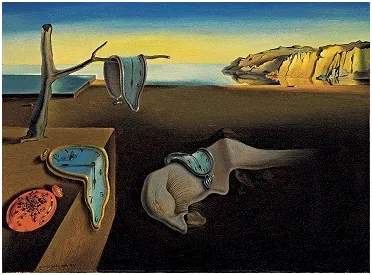
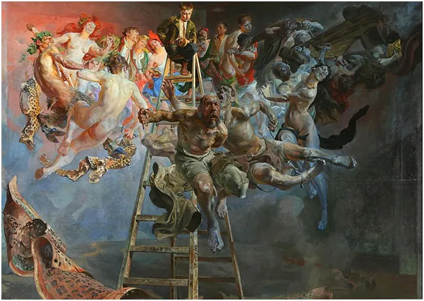
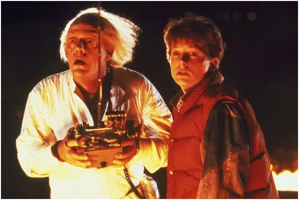

Ignorancja i ciemnota dzięki elektronice szerzą się z prędkością światła.
Dlaczego zawsze możemy mieć wpływ na naszą przyszłość?
1 listopada 2024
Sto lat mija od wprowadzenia powszechnego obowiązku szkolnego, jednak to ludzie wychowani przed tym okresem, po tysiącach lat stagnacji, dokonali największego przełomu w rozwoju nauk. Począwszy od Newtona na początku XVIII w. do fizyków kwantowych początku XX wieku wszyscy wielcy ludzie kształcili się za własne pieniądze z własnej lub rodziców woli. Masowa edukacja umożliwiła "masom ludowym" czytać prasę i książki. Prasa i potem inne media pozwoliły docierać do szerokich mas z dowolnym przekazem. XX wiek odkrył rzecz straszną, że kłamstwo powtarzane 1000 razy stanie się prawdą. Nie jest to oczywiście prawda obiektywna, ale jest to prawda praktyczna. Kłamstwo staje się prawdą w umysłach zmanipulowanych ludzi.

Do tego tekstu zainspirowała mnie publikacja "naukowca", który twierdzi, że cała przyszłość jest już zdeterminowana, nie da się jej zmienić i koniec jest już oczywisty i przesądzony. Był to pogląd "Oświecenia", epoki najbardziej ciemnej ze znanych, bo nie pozwalającej dyskutować z narzucanymi prawdami, żyjemy w tym do dziś. Student pierwszego roku fizyki wie, że prosty eksperyment z 3 cząstkami w pustym Kosmosie nie pozwala w żaden (nawet teoretyczny sposób) przewidzieć jak te cząstki będą się zachowywać, ale "naukowiec" z YT wie, że jest inaczej, mimo że nie ma żadnego pomysłu jak to przewidzieć. Gdyby miał byłby szerzej znany niż Einstein. Napisałem o tym tekst, który uważam za ważny: " Dlaczego przyszłość jest nieznana?" Polecam: https://pawelklimczewski.pl/2024/08/20/4143/
Dzięki powszechnej edukacji i mediom świat nie staje się lepszy, czy mądrzejszy, staje się głupszy i bardziej sterowalny. Od początku XX wieku dzięki socjologii wiadomo jak poprzez media można zmienić sposób myślenia dowolnej grupy ludzi. W swej pracy zawodowej długo zajmowałem się obliczaniem kosztów takiego procesu i optymalizacją jego przebiegu. W czasach mediów tradycyjnych z TV łącznie, cel takiego działania był definiowany liczbowo, np. 30% kobiet w wieku do 40 lat powinno przekonać się do nowej marki spodni i porzucić swoje dawne przyzwyczajenie co do ubioru. Po takim zdefiniowaniu celu trzeba było tylko dobrać odpowiednie środki wyrazu i policzyć koszty kampanii reklamowej. Nic innego się nie dzieje w sferze kultury i świadomości. Dziś Internet pozwala formatować przekonania i postawy każdego z nas oddzielnie, indywidualnie wg długoterminowego, metodycznego planu.

Latami lansowane w mediach postawy przekładają się na przekonania widzów. Tak jest. Pozór wolnego wyboru jest słodki, ale nieprawdziwy, czego dowodem są kolejki do punktów szczepień eksperymentalnym preparatem genetycznym na opakowaniu, którego było napisane, że "może pomóc".
Bardziej prozaicznym przykładem jest masowe picie z butelki w ruchu, na ulicy, lansowane w kinie i TV, zachowanie, które jeszcze niedawno zdradzało spragnionego dezertera uciekającego jak najdalej od linii frontu. Takie reakcje publiczności zwiększają o miliardy rocznie sprzedaż napojów.
Za chwilę będziemy świadkami największego show tego świata, wyborów prezydenckich w USA. Mimo, że proporcje głosów nie mają znaczenia dla wyniku, co dzień jesteśmy nakręcani sondażami. W całej "zachodniej demokracji" jest już normą, że liderzy mają szanse jak 48 do 49 procent, bo to buduje napięcie, przy 70:30 nikt by nie czytał kolejnych sondaży. Do takiego rozkładu sympatii w opinii publicznej doprowadza się metodycznie odpowiednio dawkując "publicystykę" i "afery".
W obliczu takiego stanu rzeczy ciekawsze jest studiowanie "problemu trzech ciał" i konsekwencji jego dla naszej egzystencji. Z tego prostego eksperymentu wynika dla nas wniosek fundamentalnie optymistyczny, że pomimo potężnej machiny, która stara się odmienić nasze umysły i duszę to my paradoksalnie zawsze mamy wpływ na naszą przyszłość. Przyszłość nie jest zapisana i nie da się jej "wyliczyć", ale starać się o nią można i to z sukcesem.
"Naukowcom" nie trzeba wierzyć nigdy, naukowców trzeba kwestionować, a artystom, patrz ilustracja, wierzyć nie musimy wcale.
Paweł Klimczewski